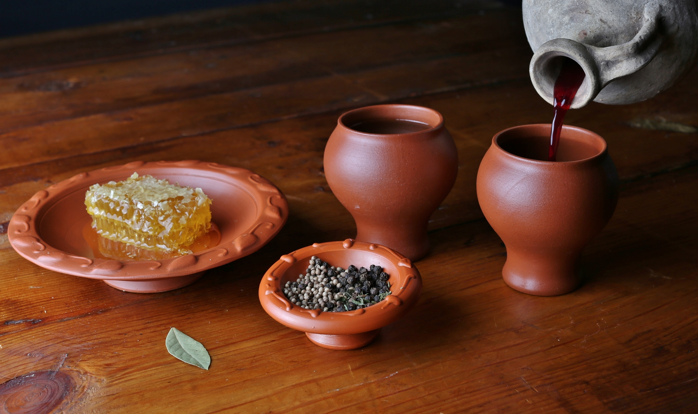

Mulsum:
A favorite in Roman banquets, it's a beverage made by mixing honey with wine, usually served at the beginning of a meal as an apéritif.

“Mulsum is not only a drink fit for the gods but also a medicine for mankind.”
— Pliny the Elder, Natural History
Ingredients:
- 1 bottle of white wine (preferably dry)
- 1/2 cup honey (adjust to taste)
- 1 cinnamon stick (optional, for added flavor)
- A few black peppercorns (optional, for spiciness)
Steps to Make Mulsum:
- Heat the Honey: In a small saucepan, warm the honey over low heat until it becomes more liquid and easy to mix.
- Mix with Wine: Slowly stir the honey into the wine in a large pitcher or bowl. If you want a smoother mixture, you can heat the wine gently to help blend it better.
- Add Spices (Optional): If you want a spiced version, add a cinnamon stick and a few peppercorns to the wine-honey mix for extra flavor.
- Let it Sit: Let the mixture rest for at least an hour, or longer if possible, to allow the flavors to meld.
- Strain and Serve: you have added spices, strain the wine before serving. Mulsum can be served chilled or at room temperature.
Savor it!
Next: Olivae Conditae